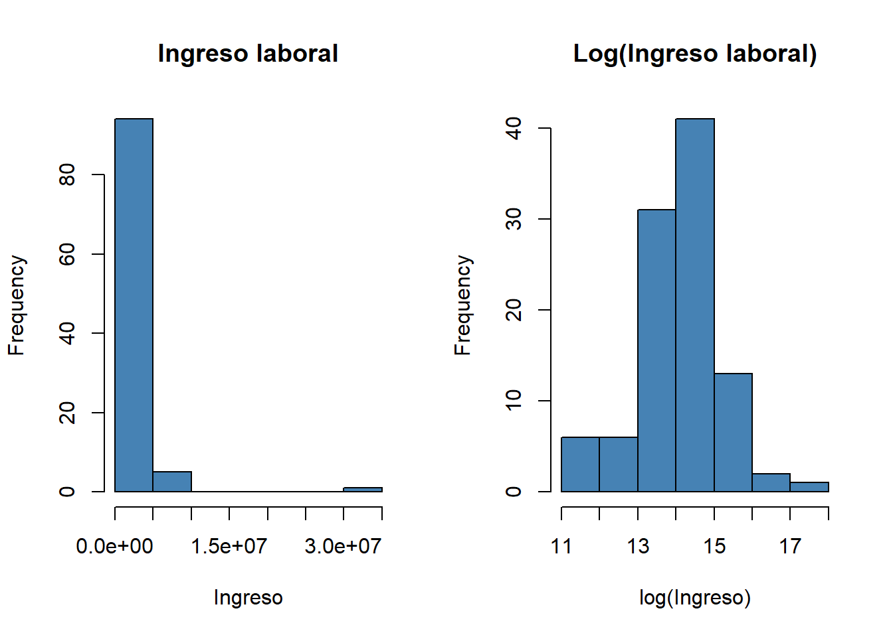
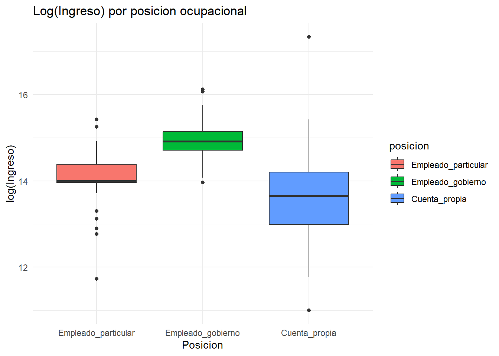
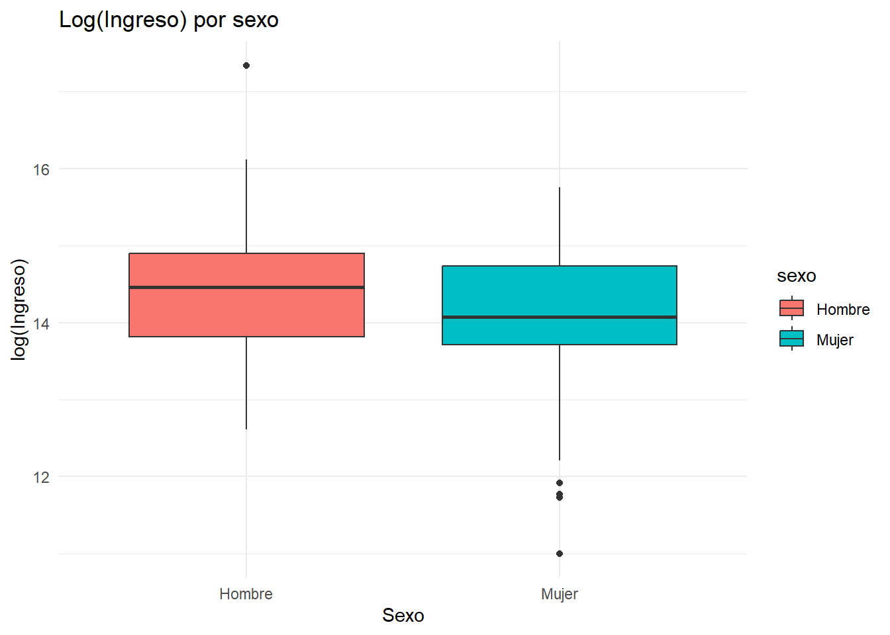
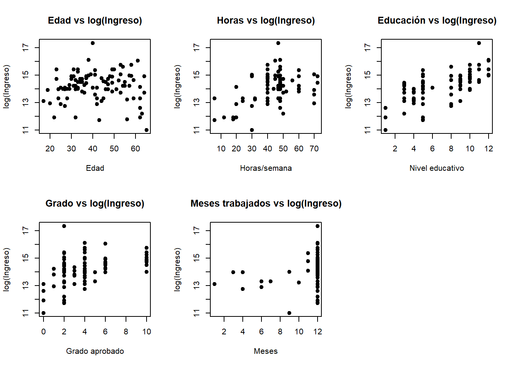

generales=read.csv("Características generales, seguridad social en salud y educación.CSV", sep =";", encoding ="latin1")
#Unir bases de datosdf_merge=inner_join(ocupados, generales,by =c("DIRECTORIO", "ORDEN", "HOGAR"))df=df_merge %>%select(ingreso = INGLABO,horas = P6800,edad = P6040,educacion = P3042,grado = P3042S1,meses_trab = P6790,posicion = P6430,sexo = P3271 ) %>%filter(!is.na(ingreso), ingreso >0,!is.na(horas),!is.na(edad),!is.na(posicion), posicion %in%c(1, 2, 4) ) %>%mutate(log_ingreso =log(ingreso),posicion =factor(posicion,levels =c(1, 2, 4),labels =c("Empleado_particular", "Empleado_gobierno", "Cuenta_propia")),sexo =factor(sexo,levels =c(1, 2),labels =c("Hombre", "Mujer")))##Note se hizo una trasnformacion a el salario a logaritmo para estabilizar la cola de los salarios que es muy posible que se presente
##semilla y eleccion de los 100 datosset.seed(123)df_100 <- df %>%group_by(posicion) %>%slice_sample(n =34) %>%ungroup() %>%slice_sample(n =100)
ingreso horas edad educacion
Min. : 60000 Min. : 6.00 Min. :17.00 Min. : 1.00
1st Qu.: 900000 1st Qu.:40.00 1st Qu.:31.00 1st Qu.: 5.00
Median : 1500000 Median :48.00 Median :40.00 Median : 8.00
Mean : 2372700 Mean :44.23 Mean :40.93 Mean : 6.98
3rd Qu.: 2675000 3rd Qu.:48.00 3rd Qu.:51.25 3rd Qu.:10.00
Max. :34000000 Max. :72.00 Max. :65.00 Max. :12.00
grado meses_trab posicion sexo
Min. : 0.0 Min. : 1.00 Empleado_particular:34 Hombre:47
1st Qu.: 2.0 1st Qu.:12.00 Empleado_gobierno :32 Mujer :53
Median : 4.0 Median :12.00 Cuenta_propia :34
Mean : 4.4 Mean :11.25
3rd Qu.: 6.0 3rd Qu.:12.00
Max. :10.0 Max. :12.00
log_ingreso
Min. :11.00
1st Qu.:13.71
Median :14.22
Mean :14.16
3rd Qu.:14.80
Max. :17.34
##Analisis Descriptivo
El ingreso laboral mensual presenta una distribucion altamente asimetrica, la media de 2.37M supera ampliamente la mediana de 1.5M, evidenciando la presencia de valores en la cola derecha de esta distribucion, el maximo de 34M aumenta la media hacia arriba. Esto justifica trabajar con el logaritmo de los ingresos como variable de respuesta del modelo
Ademas la edad promedio es de 41 años en un rango de 17-65 años, las horas semanales promedio de trabajo son 44, la mayoria trabajo los 12 meses completos del año (mediana y Q3 en 12)
par(mfrow =c(1,2))hist(df_100$ingreso, main ="Ingreso laboral", xlab ="Ingreso", col ="steelblue")hist(df_100$log_ingreso, main ="Log(Ingreso laboral)", xlab ="log(Ingreso)", col ="steelblue")

Note del histograma de ingreso laboral se puede apreciar el sesgo que presentan los datos a la derecha, esta misma viola el supuesto de normalidad, los salarios altos son poco pero disparan la media
Ahora del histograma log(Ingreso laboral) podemos observar como corrige el sesgo notablemente, la distribucion se aproxima a una normal
Esto justifica usar el logaritmo del ingreso como variable de respuesta
ggplot(df_100, aes(x = posicion, y = log_ingreso, fill = posicion)) +geom_boxplot() +labs(title ="Log(Ingreso) por posicion ocupacional",x ="Posicion", y ="log(Ingreso)") +theme_minimal()

Observe, del empleado del gobierno podemos notar como su caja es mas compacta lo que indica menor dispersion, los salarios del sector publico son mas homogeneos
El empleado particular tiene valores atipicos (varios puntos por debajo del bigote) hay personas con ingresos muy bajos
De los salarios de las personas que trabajan por cuenta propia, podemos observar como su caja es mucho mas amplia con respecto al resto de empleados, lo que indica que su variabilidad es mucho mayor. Respecto a sus bigotes, son mucho mas amplios que el resto de cajas reflejando asi como hay personas independientes con ingresos muy altos y otros muy bajos(profesionales independientes y vendedores ambulantes)
ggplot(df_100, aes(x = sexo, y = log_ingreso, fill = sexo)) +geom_boxplot() +labs(title ="Log(Ingreso) por sexo",x ="Sexo", y ="log(Ingreso)") +theme_minimal()

observe como la mediana de los hombres es ligeramente mas alta con respecto al de las mujeres, llevandolo a la escala original serian aproximadamente 1.8M de diferencia, ademas el bigote llega a un valor inferior mas alta que el que llega el de las mujeres
Analice como existen tres valores atipicos inferiores y en la de los hombres no existe ninguno ademas la caja esta ligeramente mas baja con respecto a la de los hombres y los bigotes de las mujeres es mucho mas amplio con respecto a la de los hombres indican su mayor variabilidad hacia abajo
par(mfrow =c(2,3))plot(df_100$edad, df_100$log_ingreso, main ="Edad vs log(Ingreso)", xlab ="Edad", ylab ="log(Ingreso)", pch =19)plot(df_100$horas, df_100$log_ingreso, main ="Horas vs log(Ingreso)", xlab ="Horas/semana", ylab ="log(Ingreso)", pch =19)plot(df_100$educacion, df_100$log_ingreso, main ="Educación vs log(Ingreso)", xlab ="Nivel educativo", ylab ="log(Ingreso)", pch =19)plot(df_100$grado, df_100$log_ingreso, main ="Grado vs log(Ingreso)", xlab ="Grado aprobado", ylab ="log(Ingreso)", pch =19)plot(df_100$meses_trab, df_100$log_ingreso, main ="Meses trabajados vs log(Ingreso)", xlab ="Meses", ylab ="log(Ingreso)", pch =19)

Analizando estos graficos de dispersion, observamos como hay una relacion positiva del nivel educativo y las horas a la semana con respecto al logaritmo del ingreso, las otras no aportan informacion relevante
cor(df_100[, c("log_ingreso", "horas", "edad", "educacion", "grado", "meses_trab")], use ="complete.obs")
Educacion tiene la correlacion mas fuerte con el logaritmo del ingreso, algo importante es que la correlacion de educacion y grado es 0.60, hay alerta de multicolinealidad.